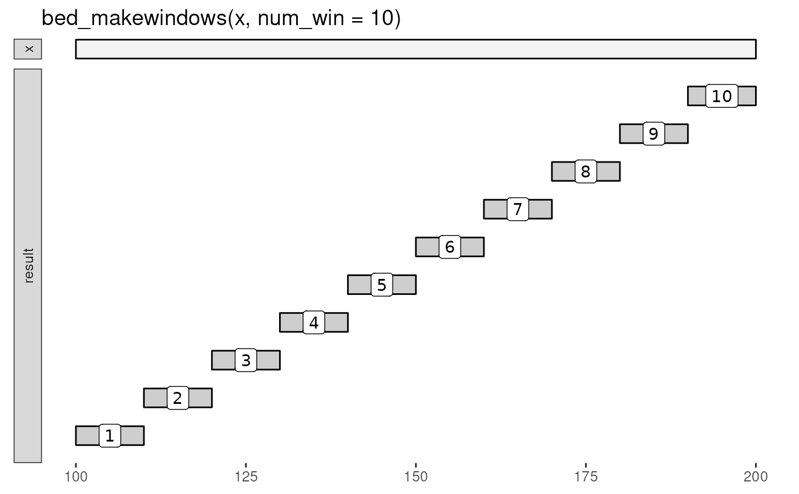

Divide intervals into new sub-intervals ("windows").
Arguments
Value
ivl_df with .win_id column that contains a numeric
identifier for the window.
Note
The name and .win_id columns can be used to create new
interval names (see 'namenum' example below) or in subsequent
group_by operations (see vignette).
See also
Other utilities:
bed12_to_exons(),
bound_intervals(),
flip_strands(),
interval_spacing()
Examples
x <- tibble::tribble(
~chrom, ~start, ~end, ~name, ~score, ~strand,
"chr1", 100, 200, "A", ".", "+"
)
bed_glyph(bed_makewindows(x, num_win = 10), label = ".win_id")

# Fixed number of windows
bed_makewindows(x, num_win = 10)
#> # A tibble: 10 × 7
#> chrom start end name score strand .win_id
#> <chr> <int> <int> <chr> <chr> <chr> <int>
#> 1 chr1 100 110 A . + 1
#> 2 chr1 110 120 A . + 2
#> 3 chr1 120 130 A . + 3
#> 4 chr1 130 140 A . + 4
#> 5 chr1 140 150 A . + 5
#> 6 chr1 150 160 A . + 6
#> 7 chr1 160 170 A . + 7
#> 8 chr1 170 180 A . + 8
#> 9 chr1 180 190 A . + 9
#> 10 chr1 190 200 A . + 10
# Fixed window size
bed_makewindows(x, win_size = 10)
#> # A tibble: 10 × 7
#> chrom start end name score strand .win_id
#> <chr> <int> <int> <chr> <chr> <chr> <int>
#> 1 chr1 100 110 A . + 1
#> 2 chr1 110 120 A . + 2
#> 3 chr1 120 130 A . + 3
#> 4 chr1 130 140 A . + 4
#> 5 chr1 140 150 A . + 5
#> 6 chr1 150 160 A . + 6
#> 7 chr1 160 170 A . + 7
#> 8 chr1 170 180 A . + 8
#> 9 chr1 180 190 A . + 9
#> 10 chr1 190 200 A . + 10
# Fixed window size with overlaps
bed_makewindows(x, win_size = 10, step_size = 5)
#> # A tibble: 20 × 7
#> chrom start end name score strand .win_id
#> <chr> <int> <int> <chr> <chr> <chr> <int>
#> 1 chr1 100 110 A . + 1
#> 2 chr1 105 115 A . + 2
#> 3 chr1 110 120 A . + 3
#> 4 chr1 115 125 A . + 4
#> 5 chr1 120 130 A . + 5
#> 6 chr1 125 135 A . + 6
#> 7 chr1 130 140 A . + 7
#> 8 chr1 135 145 A . + 8
#> 9 chr1 140 150 A . + 9
#> 10 chr1 145 155 A . + 10
#> 11 chr1 150 160 A . + 11
#> 12 chr1 155 165 A . + 12
#> 13 chr1 160 170 A . + 13
#> 14 chr1 165 175 A . + 14
#> 15 chr1 170 180 A . + 15
#> 16 chr1 175 185 A . + 16
#> 17 chr1 180 190 A . + 17
#> 18 chr1 185 195 A . + 18
#> 19 chr1 190 200 A . + 19
#> 20 chr1 195 200 A . + 20
# reverse win_id
bed_makewindows(x, win_size = 10, reverse = TRUE)
#> # A tibble: 10 × 7
#> chrom start end name score strand .win_id
#> <chr> <int> <int> <chr> <chr> <chr> <int>
#> 1 chr1 100 110 A . + 10
#> 2 chr1 110 120 A . + 9
#> 3 chr1 120 130 A . + 8
#> 4 chr1 130 140 A . + 7
#> 5 chr1 140 150 A . + 6
#> 6 chr1 150 160 A . + 5
#> 7 chr1 160 170 A . + 4
#> 8 chr1 170 180 A . + 3
#> 9 chr1 180 190 A . + 2
#> 10 chr1 190 200 A . + 1
# bedtools 'namenum'
wins <- bed_makewindows(x, win_size = 10)
dplyr::mutate(wins, namenum = stringr::str_c(name, "_", .win_id))
#> # A tibble: 10 × 8
#> chrom start end name score strand .win_id namenum
#> <chr> <int> <int> <chr> <chr> <chr> <int> <chr>
#> 1 chr1 100 110 A . + 1 A_1
#> 2 chr1 110 120 A . + 2 A_2
#> 3 chr1 120 130 A . + 3 A_3
#> 4 chr1 130 140 A . + 4 A_4
#> 5 chr1 140 150 A . + 5 A_5
#> 6 chr1 150 160 A . + 6 A_6
#> 7 chr1 160 170 A . + 7 A_7
#> 8 chr1 170 180 A . + 8 A_8
#> 9 chr1 180 190 A . + 9 A_9
#> 10 chr1 190 200 A . + 10 A_10